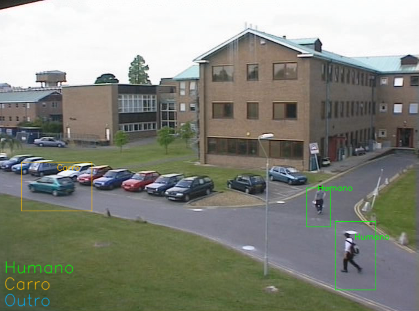

Detection Process
This consisted in subtracting the parts of the image that are static, the background, to the current frame image in order to detect the presence of new objects.
This project consists in a video classifier that can be used as the basis for a surveillance system that detects and distinguish different objects on Realtime footage.
In the context of image processing, and in order to approve a disciple, we the students had to develop an algorithm to detect and classify moving objects in a video footage.
This consisted in subtracting the parts of the image that are static, the background, to the current frame image in order to detect the presence of new objects.
In order to distinguish humans from cars we used the area, and the morphology of the white dots,
present in result of the subtraction of the background to the current frame (the back and white image above).
This together with some morphologic operators its possible to magnify these white dots facilitating the classification process.
The classification algorithm essentially consists in making a threshold for the area, width and height expected for each different object in the field of view.

This system is a very simple implementation of a Realtime footage classification, with proper adjustment for the angles of a static camera it can pretty much distinguish anything given that the threshold and morphologic operators are correctly applied.
However, a system like this with no AI can only work for one camera angle, which means multiple cameras or multiple angles require multiple instances of the script adapted to the angles and cameras itself.